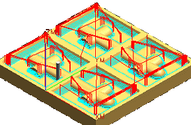
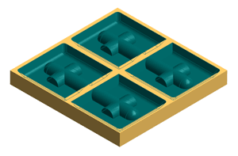

Create an operation to semi-finish the steep areas
-
On the Insert toolbar, click Create Operation
 .
.
You will create a Zlevel profile operation.

-
In the Create Operation dialog box, in the Type group, from the list, select mill_contour.
-
In the Operation Subtype group, click ZLEVEL_PROFILE
 .
.
-
In the Location group, set the following options:
Program = PROGRAM
Tool = MILL
Geometry = MILL_AREA
Method = MILL_SEMI_FINISH
-
Click OK.
-
In the Zlevel Profile dialog box, in the Geometry group, in theSpecify Cut Area row, click Display
 .
.
This option lets you visually inspect the cut areas.

Each cavity is a separate cut area. The cut area geometry is inherited from the Mill_AREA object.
-
Refresh the graphics window.
-
In the Path Settings group, from the Steep Containment list, select Steep Only.
-
In the Angle box, type 55.0.
With this setting, only the areas with a steepness greater than or equal to 55 degrees will be profiled.